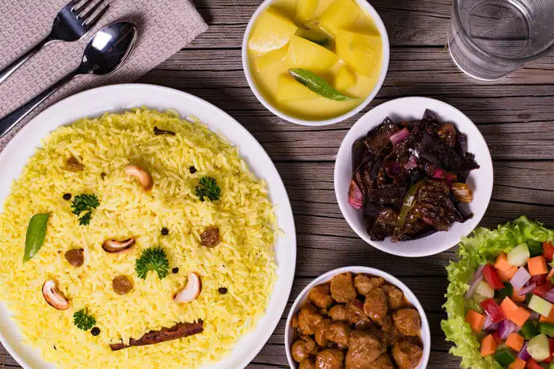
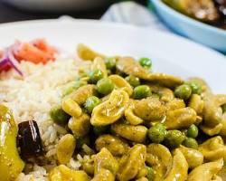
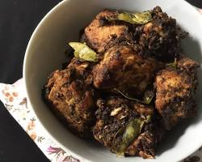
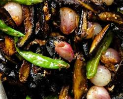

Home
Reciepe catalog
Polos Curry Reciepe
Fish Ambul Thiyal Reciepe
Cashew Curry Reciepe
Wambatu Moju Reciepe
Contact us
Sri Lankan Foods




Welcome to our Sri Lankan Foods Making website, your one-stop portal to the vibrant tapestry of tastes and traditions that define Sri Lankan cuisine.
Join with us to make your life more tasty